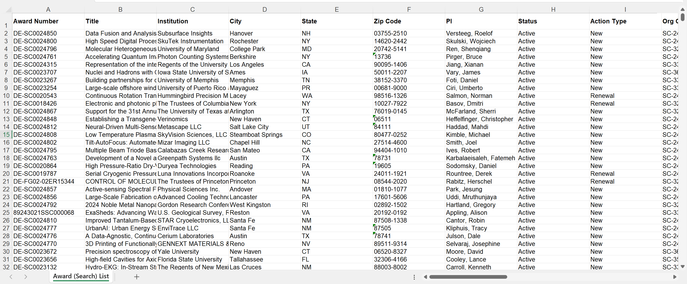
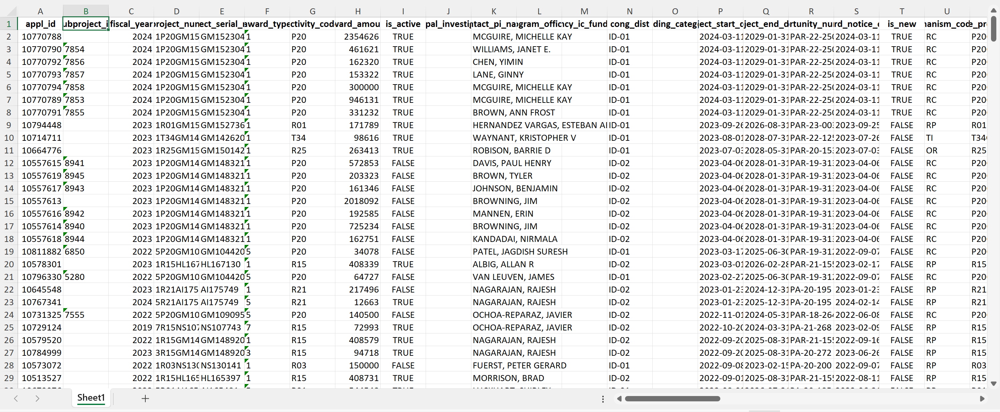
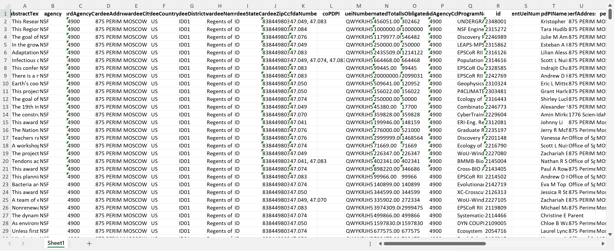

Code
knitr::opts_chunk$set(echo=FALSE, warning=FALSE, error=FALSE, message=FALSE)knitr::opts_chunk$set(echo=FALSE, warning=FALSE, error=FALSE, message=FALSE)You may be wondering what this midterm assignment addresses… Well, in this workup, I will evaluate how the University of Idaho compares to neighboring institutions in terms of grants awarded and productivity from those awards.
I will be evaluating award/grant data from four federal sponsors:
The National Science Foundation, The National Institutes of Health, The Department of Energy, and The US Department of Agriculture.
Why is the question or purpose important? We shall find out!
1. Department of Agriculture (NIFA) A snippet of the awards from USDA pertaining to UI are included below. See the data dictionary here Figure 1. This includes agricultural related grants all the way from the early 2000s.
| Award.Date | Grant.Number | Proposal.Number | Grant.Title | State.Name | Grantee.Name | Award.Dollars | Program.Name | Program.Area.Name |
|---|---|---|---|---|---|---|---|---|
| 9/30/2010 | 2010-48679-01200 | N/A | N/A | IDAHO | SAES - UNIVERSITY OF IDAHO | 7495 | N/A | N/A |
| 9/30/2009 | 2009-48679-01200 | N/A | N/A | IDAHO | SAES - UNIVERSITY OF IDAHO | 6813 | N/A | N/A |
| 9/30/2008 | 2008-48679-01200 | N/A | N/A | IDAHO | SAES - UNIVERSITY OF IDAHO | 8524 | N/A | N/A |
| 9/30/2003 | 2003-48604-01200 | N/A | N/A | IDAHO | SAES - UNIVERSITY OF IDAHO | 1097 | N/A | N/A |
| 9/30/2010 | 2010-48024-01200 | N/A | N/A | IDAHO | SAES - UNIVERSITY OF IDAHO | 11997 | N/A | N/A |
| 9/30/2009 | 2009-48024-01200 | N/A | N/A | IDAHO | SAES - UNIVERSITY OF IDAHO | 14990 | N/A | N/A |
2. Department of Energy (DOE) A snippet of these awards (all awards, not just U of I’s) are included below. 
The data dictionary for this extensive data set can be accessed here Figure 2. This data is not restricted to a particular award recipient.
3. National Institutes of Health (NIH) This data can be obtained from an Application Programming Interface (API).
Before this assingmnet, I had never heard of APIs. Apparently, they are fancy tools that allow different software components to communicate with each other.
Barrie graciously provided code to help us access this information. Again, a snippet is included. 
You can access this data’s dictionary here Figure 3. This is quite a large data set with information on awards (related to health sciences) recieved by BSU and U of I between 2013-2024. Of note, this is an example of heirarchal data- some cells appear to have no values in them becuase there are actually multiple variables within those cells. It gets complex!
4. National Science Foundation (NSF) The NSF also has an API, and the following code pulled down awards to the University of Idaho into a data frame called NSFtoUI. A snapshot of it is shown here. 
See the data dictionary here Figure 4. Briefly, this data set gives information on NSF grants awarded to the University of Idaho from 1975 to current day.
Create your visualizations in response to the questions and prompts. Answer the questions and prompts directly. Draw a conclusion or inference related to each. Identify limitations and the types of data you would need to mitigate those limitations. Also include text that explains any steps or design choices you considered while exploring the vizualization options [this normally wouldn’t appear in the report to the vice president, but I’d like a window into your process]. Be sure to include clearly labeled axes and a concise but complete figure caption for each visualization. Make deliberate choices for color palettes, point marks, line types, etc. Demonstrate that you understand the concepts we have covered!
Summarize your results. What new questions have emerged as a result of your visualizations? What interesting next steps have emerged?
Provide a visualization that shows our active awards from each sponsor. I need to see their start date and end date, the amount of the award, and the name of the Principal Investigator. I’m really interested in seeing how far into the future our current portfolio will exist. Are there a bunch of awards about to expire? Are there a bunch that just got funded and will be active for a while? Does this vary across sponsors?
What is the proportional representation of new awards to the UI from these various sources over the past 5 to 10 years? Are there any trends that are encouraging or discouraging?
I started working on this just using “DOEawards” and ChapGPT

Figure . captures the number of new grants the DOE awarded to the University of Idaho during the past 10 years.
As we can see, not much from the past 10 years!
I am first going to filter and make seperate dataframes for all sponsors and then combine and graph.
Let’s start by finishing DOE new grants count
# A tibble: 2 × 3
Year Count Sponsor
<dbl> <int> <chr>
1 2020 1 DOE
2 2021 2 DOE # A tibble: 10 × 3
Year Count Sponsor
<dbl> <int> <chr>
1 2014 9 NSF
2 2015 11 NSF
3 2016 5 NSF
4 2017 14 NSF
5 2018 10 NSF
6 2019 6 NSF
7 2020 13 NSF
8 2021 12 NSF
9 2022 8 NSF
10 2023 8 NSF # A tibble: 1 × 3
Year Count Sponsor
<dbl> <int> <chr>
1 2024 7 NIH # A tibble: 11 × 3
Year Count Sponsor
<dbl> <int> <chr>
1 2014 18 USDA
2 2015 33 USDA
3 2016 29 USDA
4 2017 23 USDA
5 2018 22 USDA
6 2019 27 USDA
7 2020 42 USDA
8 2021 52 USDA
9 2022 31 USDA
10 2023 28 USDA
11 2024 9 USDA Now let’s combine the individual, mutated dataframe for each sponsor and put them altogether for a visualization.

Figure shows the approximate trends of new grants recieved by the University of Idaho from various sponsors in the last 10 years.
Limitations = the USDA dataset did not have specifications denoting whether the awards were new or continuing, therefore, I was only able to go off the award date for being in the last 10 years and had to make the assumption all were new. This is most likely not the case, so the orange line should be interpreted with caution. In general, the USDA acutually seems to be on the decline, which would be concerning. As for the DOE, it seems we are on the rise during the past couple years. NSF seems to be steady at the moment. Meanwhile, the NIH does not have much history of giving new grants to the UI in the past 10 years, but hopefully being on the board will start the ball rolling.
How is UI performing with these sponsors when compared to the following peer institutions?
Boise State University Idaho State University Montana State University University of Montana Washington State University
Note that “performing” can mean a variety of different things. You must choose your metrics of performance and justify them.
| Attribute | Description | Type |
|---|---|---|
| Award Date | Date when award was granted | Ordinal |
| Grant Number | Unique ID for each grant | Item |
| Proposal Number | N/A for all | NA |
| Grant Title | N/A for all | NA |
| State Name | State of award (all = IDAHO) | Categorical |
| Grantee Name | Tells who received the grant (all = U of I) | Categorical |
| Award Dollars | Award amount | Quantitative |
| Program Name | Name of program grant will be used for (some are N/A) | Categorical |
| Program Area Name | Name of program (some have N/A) | Categorical |
| Attribute | Description | Type…3 | …4 | …5 | …6 | Type…7 |
|---|---|---|---|---|---|---|
| Award Number | ID of award | Item | NA | NA | NA | Ordinal |
| Title | Title of award | Item | NA | NA | NA | Item |
| Institution | Organization to whom award was granted. Some are universities, but others are companies and laboratories (many are included, not just U of I) | Item | NA | NA | NA | Ordinal |
| City | City of that organization (many- not restricted to Moscow) | Item | NA | NA | NA | Ordinal |
| State | State of that organization (many, not restricted to ID) | Item | NA | NA | NA | Ordinal |
| Zip Code | Zipcode of that organization | Item | NA | NA | NA | Quantitative |
| PI | Principle Investigator to whom award was granted | Item | NA | NA | NA | Quantitative |
| Status | Tells if award is ongoing or not (seems that only active/current awards are included in this data set) | Categorical | NA | NA | NA | Categorical |
| Action Type | Tells if the award is new or a renewal | Categorical | NA | NA | NA | Item |
| Org Code | Unique code for the award | Item | NA | NA | NA | Ordinal |
| SBIR/STTR | Tells if the awards are SBIR (Small Business Innovation Research) or STTR (Small Business Technology Transfer) programs. Neither = N/A | Categorical | NA | NA | NA | Quantitative |
| Program Office | Tells what DOE program office oversees the award | Categorical | NA | NA | NA | NA |
| Award Type | Tells type of award (grant, interagency agreement, cooperative agreement) | Categorical | NA | NA | NA | NA |
| PM | Project Manager (appear to be different people than PI) | Item | NA | NA | NA | NA |
| Start Date | Award start date | Ordinal | NA | NA | NA | NA |
| End Date | Award end date | Ordinal | NA | NA | NA | NA |
| SBIR Phase | If applicable, phase of SBIR | Categorical | NA | NA | NA | NA |
| Most Recent Award Date | Date of most recent award | Ordinal | NA | NA | NA | NA |
| Amount Awarded to Date | Money given as of most recent award date | Quantitative | NA | NA | NA | NA |
| Amount Awarded this FY | Amount awarded this fiscal year | NA | NA | NA | NA | NA |
| Program Area | What type of program the award will be used towards | Item | NA | NA | NA | NA |
| Register Number | Unique code for the award | Item | NA | NA | NA | NA |
| UEI | Unique code for the award | Item | NA | NA | NA | NA |
| DUNS | Unique code for the award | Item | NA | NA | NA | NA |
| Institution Type | Type of institution that has received the award | Categorical | NA | NA | NA | NA |
| Abstract | Abstract of what award is proposed to be used for | Item | NA | NA | NA | NA |
| Attribute | Description | Type |
|---|---|---|
| appl id | Unique ID | Item |
| subproject id | Some awards have subproject unique ID values | Item |
| fiscal year | Year of award | Ordinal |
| project num | Project number (seems to be a grouping variable) | Categorical |
| project serial num | Project number (seems to be a grouping variable) | Categorical |
| award type | Type of award (1, 2, 3, 4, 4N, 5) | Categorical |
| activity code | Code for award | Categorical |
| award amount | Amount alloted for award | Quantitative |
| is active | Tells whether the award is ongoing or not (TRUE/FALSE) | Categorical |
| principal investigators | No values | NA |
| contact pi name | Names of PIs | Item |
| program officers | No values | NA |
| agency ic fundings | No values/unsure | NA |
| cong dist | Appears to be a subset of code for awards | Categorical |
| spending categories | No values | NA |
| project start date | Start date | Ordinal |
| project end date | End date | Ordinal |
| opportunity number | Appears to be a subset of code for awards | Categorical |
| award notice date | Date of notification of award | Ordinal |
| is new | Tells whether the award is new or not (TRUE/FALSE) | Categorical |
| mechanism code dc | Code for mechanism | Categorical |
| core project num | ID for award | Item |
| terms | Keywords grant proposes to address with award | Item |
| pref terms | Preferred keywords | Item |
| abstract text | Abstract | Item |
| project title | Title of project | Item |
| phr text | Some awards have project narrative text | Item |
| spending categories desc | Some awards have spending categories | Item |
| agency code | All = NIH | Categorical |
| covid response | No values/unsure | NA |
| arra funded | All = N | Categorical |
| budget start | Start date of budget | Ordinal |
| budget end | End date of budget | Ordinal |
| cfda code | Number assigned in the awarding document funded by the Federal government (similar to NSF) | Item |
| funding mechanism | Mechanism for funding (similar to DOE) | Categorical |
| direct cost amt | Cost directly of award | Quantitative |
| indirect cost amt | Cost indirectly of award | Quantitative |
| project detail url | Website of project details | Item |
| date added | Date award added | Ordinal |
| organization org name | Organization of awardee (either U of I or BSU) | Categorical |
| organization city | No values/unsure | NA |
| organization country | No values/unsure | NA |
| organization org city | City of University (either Moscow or Boise) | Categorical |
| organization org country | Country = USA | Categorical |
| organization org state | State = ID | Categorical |
| organization org state name | No values | NA |
| organization dept type | Department type being awarded (some have) | Categorical |
| organization fips country code | No values | NA |
| organization org duns | No values | NA |
| organization org ueis | No values | NA |
| organization primary duns | Seems to be some grouping variable | Categorical |
| organization primary uei | Seems to be some grouping variable | Categorical |
| organization org fips | All = US | Categorical |
| organization org ipf code | Seems to be some grouping variable | Categorical |
| organization org zipcode | Zipcode of organization | Categorical |
| organization external org id | Seems to be some grouping variable | Categorical |
| project num split appl type code | Seems to be values 1-10 | Categorical |
| project num split activity code | Seems to be some grouping variable | Categorical |
| project num split ic code | Seems to be some grouping variable | Categorical |
| project num split serial num | Seems to be some grouping variable | Categorical |
| project num split support year | Not sure | Categorical |
| project num split full support year | Similar to previous | Categorical |
| project num split suffix code | Not sure (only some values have) | Categorical |
| agency ic admin code | Appears to be the same as project_num_split.ic_code | Categorical |
| agency ic admin abbreviation | Some sort of abbreviation | Categorical |
| agency ic admin name | Agency name (health related) | Categorical |
| organization type name | Type of organization | Categorical |
| organization type code | All = 10 | Categorical |
| organization type is other | Extends organization type (TRUE/FALSE) | Categorical |
| full study section srg code | Seems to be some grouping variable | Categorical |
| full study section srg flex | Unsure (only some values have) | Categorical |
| full study section sra designator code | Some sort of grouping variable code | Categorical |
| full study section sra flex code | Unsure (some have letters, some numbers) | Categorical |
| full study section group code | Some sort of grouping code | Categorical |
| full study section name | Section name | Categorical |
| Attribute | Description | Type |
|---|---|---|
| abstractText | Text of abstract | Item |
| agency | Agency awarding (for all = NSF) | Categorical |
| awardAgencyCode | All NSF codes appear to be 4900 | Categorical |
| awardeeAddress | Address of awardee (all of these = U of I) | Item |
| awardeeCity | City of awardee | Item |
| awardeeCountryCode | Country of awardee | Item |
| awardeeDistrictCode | District code of awardee (all = ID01) | Categorical |
| awardeeName | Name of awardee (all = Regents of U of I) | Item |
| awardeeStateCode | State of awardee | Item |
| awardeeZipCode | Zip code of awardee | Item |
| cfdaNumber | Number assigned in the awarding document funded by the Federal government | Item |
| coPDPI | Unsure/no values | NA |
| ueiNumber | Code given to U of I awards (all are the same in this data set) | Item |
| estimatedTotalAmt | Estimated total amount of award | Quantitative |
| fundsObligatedAmt | Amount NSF is obligated to give | Quantitative |
| fundAgencyCode | Same code as above awardAgencyCode | Categorical |
| fundProgramName | Various program names | Item |
| id | Unique ID for each award | Item |
| parentUeiNumber | Unsure/no values | NA |
| pdPIName | Principle Investigator | Item |
| perfAddress | Preferred address of awardee (most are U of I, some elsewhere) | Item |
| perfCity | Preferred city | Item |
| perfCountryCode | Preferred country code | Item |
| perfDistrictCode | Preferred discrict code | Item |
| perfLocation | Preferred location (some prefer elsewhere- like Idaho Falls) | Item |
| perfStateCode | Preferred state code | Item |
| perfZipCode | Preferred zip code | Item |
| piEmail | Email of PI | Item |
| piFirstName | First name of PI | Item |
| piLastName | Last name of PI | Item |
| piMiddeInitial | Middle initial of PI | Item |
| poEmail | Email of Program Officer | Item |
| poName | Name of Program Officer | Item |
| poPhone | Phone of PO | Item |
| primaryProgram | Unsure/no values | NA |
| date | Current data? | Ordinal |
| startDate | Start date of award | Ordinal |
| expDate | End data of award | Ordinal |
| title | Title of award | Item |
| transType | Type of grant (continuing, standard, fellowship…) | Categorical |
| awardee | Again, here = regents of U of I for all | Item |
| publicationResearch | Unsure/no values | NA |
| projectOutComesReport | Some have a snippet on the findings thus far | Item |